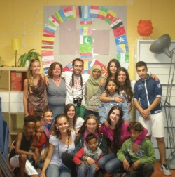
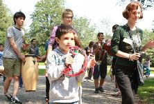

Projecten
Overig
Verslagen Nederland
Hier kun je verslagen vinden van projecten die VIA heeft georganizeerd in Nederland.
AZC Schalkhaar
Door Marthe Raad, Schalkhaar, Overijsel, 2013
In de zomer van 2013 was VIA actief op het Asielzoekerscentrum (AZC) Schalkhaar in Schalkhaar (Overrijssel). Elf vrijwilligers samen met twee kampleiders organiseerden tijdens deze periode elke werkdag spellen voor ongeveer 30-40 kinderen uit AZC Schalkhaar.
Hier een verslag van het project. Het project is mede mogelijk gemaakt door Stichting Het Maagdenhuis.

Let’s give peace a chance
Marine Doisy, Almelo, 2013
"All we are saying is to give peace a chance". John Lennon said this some years ago. Nowadays, many countries are in wartime, and I realize that, in our daily life, we don’t measure how lucky we are to live in a country in peace, benefiting from liberty and rights.
In fact, in general, we few know what is really happening in Afghanistan, Iraq, Somalia… - we know few, but I could also say at all. By the way, it’s as much “we don’t know”, than “we don’t want to know”. The international civic service sends volunteers from all over the world in diverse work camps, anywhere in the world, in order to promote peace.
Asielzoekerscentrum Almelo
Door Elin Hofman, Almelo, 2013
In augustus 2013 vond voor de eerste keer een werkkamp bij het asielzoekerscentrum (azc) in Almelo plaats. Het doel was om twee weken lang activiteiten voor de bewoners van het centrum te organiseren. Met name voor de kinderen zullen er activiteiten worden georganiseerd. De vakantie is voor hen een dubbele periode; aan de ene kant is het fijn om even vrij te zijn van school, maar aan de andere kant hebben zij weinig te doen en is de kans op verveling groot. De kinderen kunnen niet op vakantie en zitten hun tijd als het ware uit. Daarnaast is er vanuit de thuissituatie vaak stress rondom procedures, waarvan kinderen zich in de vakanties mogelijk veel bewuster zijn, nu zij de gehele dag thuis zijn. De activiteiten zullen voor hen daarom een welkome afleiding zijn.
Buitenland in Nederland
By Lokien Holleman, Markelo, 2012
Ik rijd over een landweg met rechts en links bos. Ik passeer een dorpje en sla weer een landweg op; links en rechts weiland. Bij de rotonde naar rechts en weer naar rechts, voorbij de slagboom. Ik ben hier al vele malen geweest, maar ieder jaar als ik hier terug kom, kost het me moeite te realiseren dat ik in Nederland ben. Na de slagboom en het aanmelden bij de receptie neemt dit gevoel alleen maar toe. Naast een internationale groep vrijwilligers, tref ik namelijk ook bewoners vanuit de hele wereld. Allemaal hebben ze hun eigen verhaal en spreken ze hun eigen taal, maar allemaal wonen en leven ze ook met elkaar samen.
Ik ben in het Asielzoekerscentrum Markelo. Een van de plekken waar Stichting VIA al jaren lang een zomerproject organiseert. Ik doe al enkele jaren de coördinatie van dit project en ik altijd enkele dagen langs om me op te laten nemen in de groep en te laten bespringen door de hordes kinderen, die onmiddellijk op me af komen rennen.
Hier een verslag van het project in 2011. Het project is mede mogelijk gemaakt door Stichting Het Maagdenhuis.